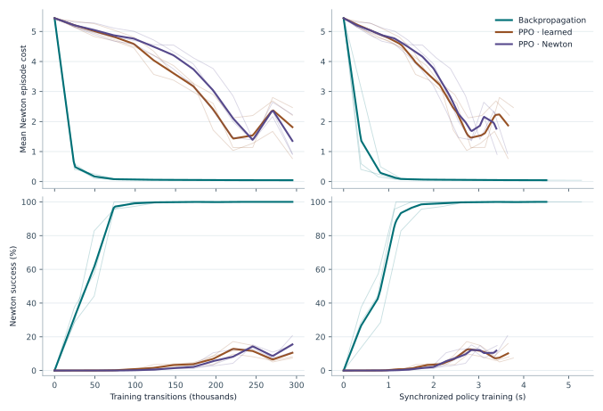
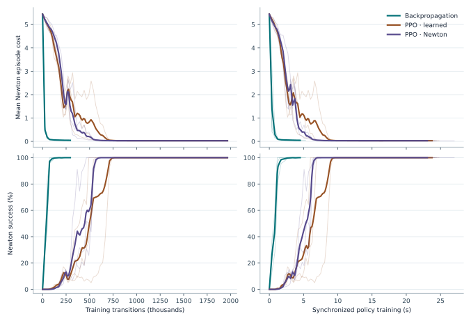
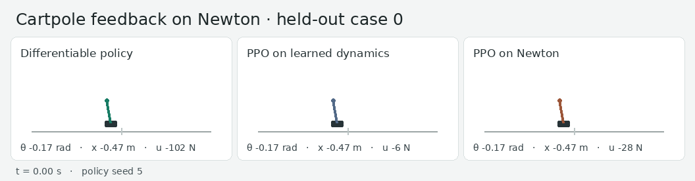
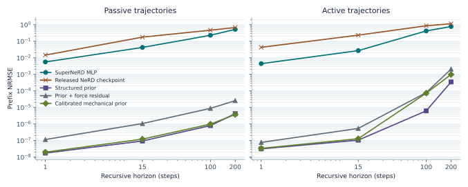
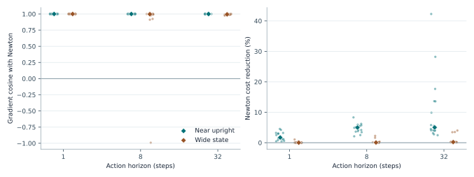

1. Introduction
Learned robot dynamics can cut the cost of a transition and provide derivatives of that transition with respect to state and action. Those are separate sources of potential speedup. Optimizing a policy through an inaccurate derivative can spend fewer imagined steps and still produce a worse controller on the original simulator.
We test whether direct policy gradients reach useful Newton performance sooner than PPO on the same learned dynamics. We measure both the behavior of the learned step over open-loop horizons and the closed-loop performance of the resulting policies on Newton. The comparison isolates the policy update from changes to the simulator architecture.
3. Method
3.1 Learned decision step
The model state is cart translation, pole angle and their velocities. The input is seven features from scaled state, sine and cosine of the pole angle, normalized force and signed proximity beyond the rail-limit margin. A 4,932-parameter MLP with two width-64 SiLU layers outputs four state corrections over a kinematic position update. The architecture receives a single observed state. The force remains constant across the five Newton physics substeps in each label.
The diagonal scale D puts the four residual components on comparable scales for fitting. The first 80% of updates use one-step error. The final 20% unroll four predictions with the recorded forces. The loss is the mean squared error of state normalized by component and horizon. Newton supplies the labels and accepts replay actions through the same force interface.
3.2 Policy update
All arms use the same actor and initial observation and exploration distributions. The actor outputs a Gaussian logit mean with fixed standard deviation 0.18 in training. A tanh maps the sampled logit to a cart force bounded at ±225 N. Training costs include pole-angle error, cart displacement, joint speeds, force and soft state-limit penalties. Evaluation takes the mean logit and uses the stage cost for the physical state.
Backpropagation takes the derivative of this objective through 48 imagined steps with frozen dynamics. The PPO arms fit a critic and use clipped updates with ratio clipping of 0.2 and GAE with λ=0.95. One PPO arm samples the frozen model. The other uses Newton. Actor learning rates are 0.01 for backpropagation and 0.001 for PPO. The comparison measures these optimization recipes at equal environment interactions, with wall time reported separately. [4]
3.3 Mechanically structured comparison
A specialized analytical prior integrates a two-coordinate mass matrix, gravity, centrifugal bias and stiff rail-limit forces for five semi-implicit substeps. It refreshes the inertia once per decision, as configured in Newton. A second model adds a 322-parameter MLP residual to generalized forces, with its final layer initialized to zero. The residual test uses the same training distribution and held-out trajectories. A separate system-identification control fits six scalar coefficients from Newton transitions. It begins with deliberately perturbed mass, inertia, coupling, gravity, rail stiffness, and damping. Positive inertia parameters and a bounded coupling maintain a positive-definite mass matrix. We fit the same formula separately under the two inertia conventions.
4. Experimental setup
The public NeRD CartPole URDF is evaluated with Newton Featherstone at a 60 Hz decision rate. Training data are 131,072 transitions from 4,096 Newton worlds started from a mixture of broad and near-upright states with randomized open-loop forces. Each held-out open-loop cohort has 2,048 reset trajectories, passive or actively forced. Autonomous prediction is scored over the 200 steps after the first ten observed frames. The released NeRD model uses all ten observations. The primary control benchmark uses the inertias declared by the URDF, with 1 kg and 10 kg cart and pole masses. Checkpoint, asset and run metadata are versioned with the report.
For each policy seed (5, 19, 47), a policy update uses 64 reset worlds for 48 decisions. Checkpoints are tested with deterministic feedback over 120 Newton decisions and a separate 256-reset seed. Success requires the cart and speeds to stay inside the declared state limits and the upright angle and angular velocity to stay within 0.15 rad and 0.5 rad/s for all final 60 decisions. The 90% success threshold is measured on these Newton replays.
Open-loop error uses the root mean square over trajectories and the indicated prefix, with pole-angle differences wrapped. Each state channel is normalized by its training-trajectory standard deviation before the root mean square across channels. Endpoint and one-step teacher-forced errors are retained in the raw receipts. This normalization and the test data are shared across the local figure.
5. Results
5.1 Policy quality and time
Backpropagation first reaches at least 90% success in all three seeds at the update-24 checkpoint, after 73,728 imagined transitions and 1.13–1.73 s of policy training. It reaches 100% in all seeds at 294,912 transitions. The learned-model PPO arm ends at 7.4–16.0% and Newton PPO at 10.9–20.7% at that budget. At equal steps, backpropagation takes longer per update. The quality advantage drives its sample efficiency.
| Optimizer | Mean success | Seed range | Mean cost | Training time (s) |
|---|---|---|---|---|
| Backpropagation · learned | 100.0% | 100.0–100.0% | 0.046 | 4.50–5.28 |
| PPO · learned | 10.5% | 7.4–16.0% | 1.813 | 3.65–3.77 |
| PPO · Newton | 15.5% | 10.9–20.7% | 1.354 | 3.39–3.64 |

An extended run used the same PPO settings and seeds with a higher fixed update budget. A threshold crossing is the first observed checkpoint with at least 90% Newton success. The exact crossing between evaluations is interval-censored.
| Optimizer | Final transitions | Final success range | Seeds crossing 90% | Transitions to 90% | Seconds to 90% |
|---|---|---|---|---|---|
| PPO · learned | 1,966,080 | 100.0–100.0% | 3/3 | 491,520–712,704 | 6.01–8.96 |
| PPO · Newton | 1,966,080 | 100.0–100.0% | 3/3 | 368,640–565,248 | 5.08–6.58 |

Median policy-training time to the 90% threshold is 5.90× lower than learned-model PPO and 5.53× lower than Newton PPO. These ratios use medians across the three seeds. With dynamics setup, data generation, fitting and scheduled Newton evaluation charged, medians are 4.69 s for backpropagation, 11.19 s for learned-model PPO and 7.46 s for Newton PPO. The longer PPO runs also reach 100% and achieve lower stage cost than the initial 96-update backpropagation runs. A separate 320-update backpropagation run keeps 100% success but still ends at higher median cost (0.0414) than learned PPO at 640 (0.0281). The longer backpropagation runs are scored by quality here. Threshold accounting.
The learned arm uses 3.33 s to create the training worlds, log training rollouts and fit the dynamics after caches are warm. Adding that cost to the pathwise threshold times gives about 4.46–5.06 s, before replay evaluations. This separates an upfront world-model fit from amortized policy learning.

5.2 Prediction and throughput
Passive prefix NRMSE reaches 0.525 at 200 steps for the unrestricted MLP. The mechanical prior gives 4.20e-06 on the same trajectories. Adding the trained force residual raises that to 2.58e-05. The structured prior already captures this teacher closely, so fitting a free correction can amplify small errors.

The six-coefficient calibration runs in 49–75 ms on CPU after 0.50–0.58 s of teacher setup and data generation. With the corresponding neural fit normalizers, its passive and active 200-step prefix NRMSE are 3.75e−6 and 9.81e−4 for the modern asset and 3.91e−5 and 4.47e−5 under legacy inertias. The known CartPole equations and rail force law supply the structure for this comparison. Modern fit · Legacy fit.
| Batch | Newton graph (ms) | Learned eager (ms) | Learned graph (ms) | Newton / learned graphs |
|---|---|---|---|---|
| 1 | 0.188 | 0.168 | 0.025 | 7.62× |
| 128 | 0.226 | 0.178 | 0.033 | 6.86× |
| 2048 | 0.393 | 0.184 | 0.045 | 8.77× |
5.3 Action derivative fidelity
We differentiate a separate smooth tracking objective through 1, 8 and 32 controls for 16 near-upright and 16 wide-state cases. Central differences check PyTorch derivatives and independently estimate Newton derivatives at two force perturbation sizes. Near upright at 32 steps, the median cosine with Newton is 1.000 for the unrestricted model and 1.000 for the structured residual. Median relative gradient-vector errors are 7.49% and 0.012%, respectively. All 16 near-upright cases improve with one fixed-size negative-gradient step for either model.

Structured model derivative plot · MLP probe data · Structured probe data

6. NeRD replication
The original NeRD checkpoint and the published FlashNeRD comparisons answer different questions. The release audit records the version, training teacher, state/action conventions and what ran. The FlashNeRD rows below are author-reported references.
We reproduced original NeRD Figure 3 on its legacy Warp teacher and public checkpoint. Replay receipt.
| Horizon | Cart replay (m) | Cart paper (m) | Pole replay (rad) | Pole paper (rad) |
|---|---|---|---|---|
| 100 | 0.000156 | 0.0002 | 0.000394 | 0.0004 |
| 500 | 0.004366 | 0.004 | 0.013441 | 0.013 |
| 1000 | 0.032776 | 0.033 | 0.075032 | 0.075 |
The released 2,713,668-parameter NeRD model also ran on all local active and passive trajectories with ten teacher frames of warmup and the same recorded forces. The legacy Warp importer infers 50 kg and 2.5 kg cart and pole masses from collision geometry. The primary current Newton teacher uses the URDF-declared 1 kg and 10 kg inertias. Pinned NeRD source · 287dde2134eb8f5277c17a8f7cc7abbe64063e97cb481bdb6e8d76f9536e5366 checkpoint SHA-256.
A second Newton run uses the legacy-inferred masses and re-fits SuperNeRD from scratch. Released NeRD is substantially more accurate than the small learned MLP in both cohorts. The original analytical Warp solver incurs similar error to the released checkpoint, meaning different numerical solvers still contribute an error of that scale after inertia alignment.
| Test cohort | Released NeRD | Refit SuperNeRD MLP | Original Warp teacher |
|---|---|---|---|
| Passive | 0.0544 | 0.6556 | 0.0540 |
| Active | 0.1355 | 0.7957 | 0.1361 |
The released eager NeRD adapter takes 8.78 ms at batch 2,048 on this workstation. The compact SuperNeRD eager model takes about 0.18 ms in the local forward harness. The two figures cover different adapter implementations and model sizes. The same-mass accuracy gap prevents treating the faster model as an equivalent solver. Released adapter receipt · SuperNeRD timing receipt.
| Paper model | E1 | E15 | E100 | E200 | Steps/s at B=16,384 |
|---|---|---|---|---|---|
| Optimized NeRD | 5.89e−5 | 4.78e−4 | 8.43e−3 | 0.106 | 1.22M |
| FlashNeRD | 4.41e−5 | 1.73e−4 | 3.23e−3 | 0.0599 | 48.1M |
FlashNeRD reports CartPole training on about 9,000 trajectories for five million updates. Its ANYmal experiment crosses a training-reward threshold at 34.3 s, compared with 93.2 s for Optimized NeRD and 129.9 s for MJWarp. Those times start with a ready dynamics model and count PPO iteration durations. Final ANYmal evaluation in MJWarp yields mean returns of 28.0, 27.6 and 27.8, respectively. [2, Sections IV-A and IV-B]
A direct FlashNeRD result needs its weights or a validated reproduction of its training data, observation and contact processing, normalization, CUDA graph timing and policy environment. The CartPole pilot provides a controlled intervention on the policy optimizer. ANYmal velocity tracking and G1 contact-rich control remain separate replication targets.
7. Limitations
CartPole has two generalized coordinates, bounded forces and a rail joint limit. The policy starts near upright. No floating base, variable contact set or dynamic-object interaction is exercised. The unrestricted MLP's long-horizon error limits replacement of general articulated dynamics. Mechanical structure helps CartPole because its equations are available and its teacher closely matches them.
The policy optimizer comparison uses one hyperparameter recipe per method and three seeds. Evaluation resets are shared across seeds and methods. Episode counts therefore describe evaluation coverage. The independent training seeds are the units of optimizer variation. Timing on one workstation with warmed kernels does not establish performance on the GB200 or at FlashNeRD's largest batches.
The main NeRD transfer experiment changes the cart and pole masses, alongside the simulator implementation. Its eager adapter and local CUDA graph timings are recorded separately. The latest benchmark's original data, weights and optimized kernels are needed for a matched state-of-the-art comparison.
8. Conclusion
Short-horizon pathwise policy updates exploit a useful control gradient even when the learned simulator accumulates substantial long-horizon state error. The evidence motivates a matched ANYmal or G1 experiment that holds the contact representation and world model fixed while changing the optimizer. Comparable analytical-simulator policy quality is the deciding metric.
Reproducibility
The repository pins Newton, Warp, the public NeRD asset and checkpoint hashes. It includes the run commands, policy learning curves, model and policy weights, per-cohort prediction metrics and the source for the figures. Reproduction instructions · Protocol and follow-up targets · Raw pilot data
References
- Xu, J., Heiden, E., Akinola, I., Fox, D., Macklin, M., and Narang, Y. (2025). Neural Robot Dynamics. CoRL. Paper · Code.
- Ataei, M., Nabian, M. A., Xu, J., et al. (2026). FlashNeRD: Performance-First Contact-Rich Neural Robot Dynamics. arXiv:2610.09130. Paper.
- Liao, Q., Shao, Y., Long, J., et al. (2026). SuperMimic: Scaling Humanoid Whole-Body Control with One Differentiable World Model. arXiv:2610.28480. Paper · Code.
- Schulman, J., Wolski, F., Dhariwal, P., Radford, A., and Klimov, O. (2017). Proximal Policy Optimization Algorithms. arXiv:1707.06347. Paper.
- Newton Physics. Newton Physics Engine. Source.